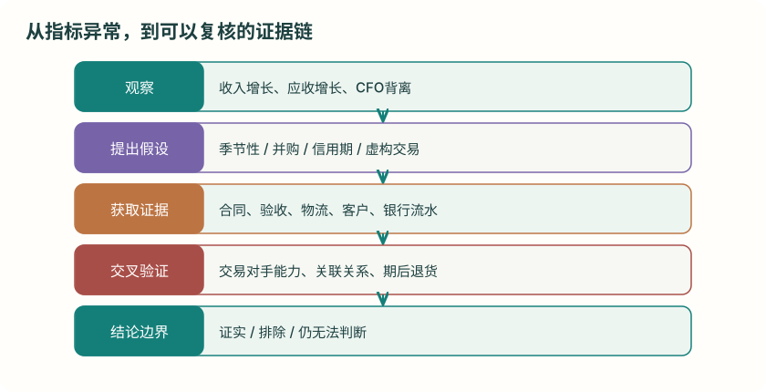
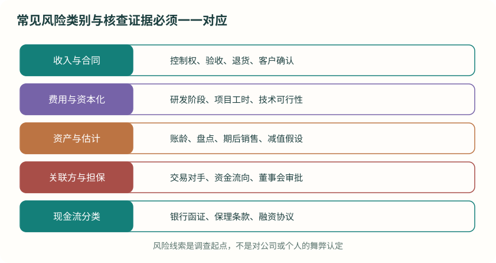

财务粉饰与舞弊识别：从报表异常到证据链
一项异常指标不是舞弊结论，一项合规会计判断也不自动等于高质量报告。真正有效的识别，需要把激励、会计处理、交易实质与独立证据连接起来。
先区分会计判断、盈余管理与财务舞弊
财务报告质量不是简单的“真实/虚假”二元开关。企业可能在准则允许的会计政策和估计范围内作判断，也可能选择偏激进但仍需进一步评价的处理；如果存在故意重大错报、虚构交易或隐瞒重要事实，则可能涉及财务舞弊和信息披露违法。概念边界需要结合具体事实、主观意图、重要性和适用法律判断，不能仅凭一个利润率或现金流比率定性。
分析者的任务是识别风险并提出可证伪的假设，不是替监管机构、审计师或法院作舞弊认定。高增长、高毛利、低坏账率、低资本开支、频繁更换审计师等信号，都必须先放回企业业务模式与行业背景中解释。

收入确认：合同、履约义务与控制权
收入风险通常集中在确认时点、交易价格、合同组合、可变对价，以及主要责任人/代理人的总额法与净额法判断。中国《企业会计准则第14号——收入》要求企业在履行合同中的履约义务、客户取得相关商品控制权时确认收入；在某一时段履约与某一时点履约的判断，需要符合准则规定的条件。
因此，“年末发货”本身不等于提前确认收入；“货物没有经过企业仓库”也不能单独决定总额法还是净额法。主要责任人/代理人判断应看企业在商品转让给客户之前是否控制该商品，并综合主要责任、存货风险、定价权等事实。合同、验收、物流、客户退货权、付款条件、后续退货与期后收款应相互印证。
证监会 2026 年专项行动公开指出，监管重点包括空转走单虚假贸易、滥用总额法夸大营收、调节收入确认时点等问题。这是监管风险重点，不意味着凡有贸易业务或总额法确认的企业都存在问题。
费用资本化与资产估计：利润被推迟确认了吗？
将当期支出确认为资产，会改变费用确认的期间分布，但资本化本身不等于违规。中国《企业会计准则第6号——无形资产》要求区分研究阶段与开发阶段：研究阶段支出发生时计入损益；开发阶段支出只有同时满足技术可行性、完成意图、经济利益、资源保障和可靠计量等条件，才能确认为无形资产。以前期间已费用化的研发支出不得仅因后续销售成功而随意转回资本化。
资产估计也有合理不确定性：应收款预期信用损失、存货可变现净值、商誉及长期资产减值、预计负债、折旧和摊销年限，都需要结合当期可获得证据。异常点在于估计变化是否有可验证的新信息、关键假设是否与业务事实相符、披露是否完整，而不是简单认定“坏账率低就是造假”。
| 报表变化 | 可能的正常原因 | 核查方向 |
|---|---|---|
| 研发费用率下降 | 项目阶段变化、产品组合变化 | 项目立项、阶段划分、人员工时、资本化条件 |
| 应收减值率下降 | 客户信用改善、回款结构变化 | 账龄迁移、期后回款、客户信用证据 |
| 存货周转变慢但减值稳定 | 战略备货、产品结构变化 | 库龄、订单、售价、盘点与可变现净值 |
| 商誉未计提减值 | 资产组未来现金流仍支持账面价值 | 预测收入、利润率、折现率与敏感性 |
关联方、担保、融资安排与现金流列报
资产负债表风险可能通过其他应收款、合同资产、长期股权投资、商誉、少数股东权益、担保和未合并主体关系暴露。对“往来款”或其他模糊科目，应识别交易对手、商业目的、合同条款、资金最终流向、期后结算与关联关系；不能只设一个“其他应收款占总资产超过某比例”的通用红线。
租赁负债已受到适用租赁准则的规范，不能沿用“经营租赁全部表外”的旧说法。保理、票据贴现、供应链融资等交易是否终止确认、如何分类现金流，取决于合同权利义务、风险报酬或控制转移以及适用准则。若企业保留追索权、回购义务或其他持续涉入，应继续检查披露和计量。
现金流也可能受到分类、期末结算和关联资金安排影响。中国 CAS 31 对现金流按经营、投资、筹资分类并要求经营现金流采用直接法列示；分析者应回到附注明细、银行函证和交易实质，不可笼统声称现金流“天然无法粉饰”。
把红旗转化为可以验证、也可以推翻的假设
一个可执行的调查顺序是：
定位异常：明确哪个期间、哪个报表项目、哪项比率偏离了自身历史或可比公司。
列出竞争解释：季节性、并购、产品组合、账期变化、一次性交易与会计政策变化。
核对交易原件：合同、订单、履约记录、验收单、物流、仓储、发票和退货条款。
核对独立证据：客户/供应商确认、银行流水、税务资料、期后收付款和交易对手履约能力。
追踪资金与关联关系：股权穿透、共同地址/人员、担保、资金回流和期末后冲回。
检查会计分录：期末手工分录、异常科目、非经常交易、合并抵销与重大估计调整。
形成边界结论：区分已证实事实、支持性证据、反证和仍未解决的问题。
PCAOB AS 2401 是美国上市公司审计体系中的舞弊考虑准则，不是中国企业的直接法律依据；但其对期末异常分录、重大异常交易、未披露关联方和缺乏商业实质安排的审计关注，可作为理解审计证据逻辑的比较参考。中国市场的监管依据应以证监会、财政部及交易所的适用规则为准。

财务异常筛查：只计算差异，不输出舞弊分数
调整假设，即时复算
此工作台只展示数据差异，不设置统一红线、不生成舞弊概率或风险评级。应收增速差、Q4占比和现金利润背离都必须与季节性、合同、并购和期后证据核对。
默认示例中应收增速比收入高 50 个百分点，Q4 占比 45%，CFO/净利润为 −20%。这些数字只能帮助决定先核查哪些科目，不能单独证明收入虚构或利润造假。
反舞弊分析的边界与复核清单
最终工作底稿应将每条红旗写成一个待验证问题，并同时列出支持证据和反证。对真实企业的结论，应区分公开披露事实、分析者推断、尚未证实的线索和监管已经认定的事实。若引用行政处罚或监管报告，必须明确公司名称、报告期间、处罚状态和原始文件，不能将“立案调查”“事先告知”“行政处罚决定”混为一谈。
证监会 2024 年财务造假综合惩防意见强调穿透式监管、查处第三方配合造假和强化公司治理；证监会 2025 年发布的 2024 年年度财务报告会计监管报告则记录了收入、企业合并、金融工具、减值和非经常性损益等会计处理问题。这些官方材料说明监管核查的范围远超单一比率。
自测：收入增长30%、应收增长80%、第四季度收入占45%，能否直接认定舞弊？
不能。应先核对季节性、并购、信用期、合同履约、客户验收、期后退货与回款、交易对手能力及资金流向。若证据无法支持交易实质，才进一步评估错报与舞弊风险；若有正常商业解释，应记录并验证该解释。
结论：专业的反舞弊分析不是“找一个红旗就下结论”，而是用独立证据支持或推翻竞争假设，并对结论强度保持克制。
依据与适用边界
本章金额、公司与计算案例均为教学虚构；红旗和筛查指标不是舞弊认定。真实判断应结合适用会计准则、监管规则、合同和独立证据。